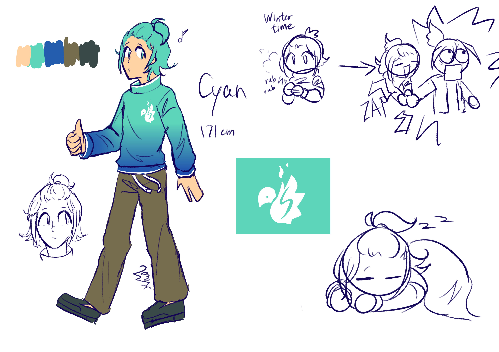

You want me to join this game? Sure why not?

Lore facts:
- They're quite easygoing, they aren't as socialable as Ember, but their attitude makes others find them very approachable
- They are on Team Spark, which is Ember's Team
- Only do things when they are asked to, they're so me fr
- Makes puns when the right timing comes
Meta facts:
- I wasn't very certain on their clothing style at first, in their concept art, I tried to give them more preppy clothing, or more adventurous clothing, but it seemed nothing fit
- Decided to settle on an outfit that's similar to the one I gave to their Mii version in Tomodachi Life LTD
- I wasn't certain on their gender as well, then decided to make them non-binary cuz, why not
- Somewhat inspired by Cyan from Horse Race Tests, you might not see the resemblance (aside from the name and colors of course), but maybe in the future something will change...